Türkiye’de son yıllarda seçim anketleri büyük ilgi görüyor. 7 Haziran seçimleri öncesi yapılan anketlerin önemli bir kısmı seçim sonuçlarını iyi tahmin edince bu anketlere duyulan güven artmıştı. Fakat 1 Kasım seçimleri öncesi yapılan anketlerin hemen hepsi benzer sonuçlara ulaşırken seçim sonuçlarının çok farklı çıkması, anketlere olan güveni sıfırladı.
Seçim anketleri ne zaman ve nasıl başarılı olabilir? Seçim anketlerinin yanlış çıkmasının nedenleri nelerdir? Bu notumuzda seçim anketlerinin başarılı olma koşullarını kısaca tartıştıktan sonra 7 Haziran ve 1 Kasım’da seçimlerine yönelik yapılan anketlerin sonuçlarını değerlendireceğiz.
Seçim anketleri ile seçim sonuçları arasındaki farklılık, yani “hata” düzeyini belirleyen 7 etkenden bahsedebiliriz.
Örneklem hatası: İlk olarak, istatistikte “örneklem hatası” denilen bir hata söz konusudur. Anketler zaman ve maliyet nedeniyle tüm seçmenlere (evrene/popülasyona) değil, bir grup “temsili” kişiye uygulanır. Anket uygulanacak kişiler tesadüfi yöntem ile belirlenir. Bu nedenle, tesadüfi olarak seçilen bir gruptan elde edilen sonuçların seçilen kişilere bağlı olarak farklı olması mümkündür. Bu farkın, yani hatanın ne kadar olabileceği istatistiksel yöntemler ile saptanabilir. Örneğin bir ülkede 55 milyon seçmen varsa ve anket tesadüfi şekilde seçilmiş 3,000 kişiye uygulanıyorsa, oy oranı gerçekte % 50 olan bir partinin oy oranı anket sonucu % 95 olasılıkla % 48.2-% 51.8 aralığında bulunacaktır. Bu, “% 95 güven aralığında % 50 ±1.8” olarak tanımlanır. Burada ±1.8’lik sapma “hata payı” olarak da tanımlanmaktadır. Araştırma şirketlerinin bir çoğu bu veriyi de yayınlamaktadır. Fakat araştırma şirketi bu veriyi yayınlamasa da anket yapılan kişi sayısından bunun yaklaşık olarak hesaplanması mümkündür. Örneklem hatasının azaltılması anket sayısının artırılmasıyla mümkündür. Örneğin 10,000 kişiye anket yapılırsa hata payı ±1’e düşecektir.
“Seçim anketi” denildiğinde akla ilk gelen hata “örneklem hatası”dır. Seçim sonuçları anket tahminleri ile karşılaştırılırken genelde sadece bu hata oranları göz önüne alınır, fakat aşağıda belirtildiği gibi anket sonuçlarının farklı çıkmasına yol açabilecek başka nedenler de vardır.
Yanlış örneklem ve uygulama: Örneklem hatası açıklanırken, anket kapsamına alınacak kişilerin tesadüfi yöntemle seçilmesi gerektiğini özellikle vurguladık. Şayet örneklem tesadüfi yöntemle seçilmezse, örneklem hatasına ek olarak tahmin sonuçlarında sapmalar oluşacaktır. Örneğin Türkiye genelinde yapılacak bir tahminde, anket yapılan kişiler sadece bir ilden seçilirse tahmin sonuçları Türkiye ortalamasını yansıtmaz. Türkiye genelinden örneklem çekilmesi anket maliyetlerini artıracağı için genelde araştırma şirketleri seçmenleri çeşitli tabakalara/kotalara ayırmakta, örneklemi kendilerinin belirlediği bu tabakalar/kotalar üzerinden seçmektedir. Bu tabakaların/kotaların ağırlıklarının yanlış belirlenmesi veya bu birimler içerisinde anket yapılacak kişilerin tesadüfi olarak seçilmemesi durumunda da anket sonuçları hatalı olacaktır. Örneğin A kotasından 20 kişiye anket uygulanacaksa, bu 20 anketin hepsinin aynı mekanda veya sokakta yaşayan kişilere uygulanması hata payını artıracaktır.
Yanlış örneklem veya uygulama sorularından kaynaklanan hatanın olmaması için araştırma şirketinin tüm seçmenlere (anket evrenine) ilişkin tam bilgiye sahip olması gereklidir, çünkü anket örneklemi bu evrene göre seçilecektir. Tüm seçmenlere ilişkin verilerin yanlış olması doğal olarak anket sonuçlarında da hatalara yol açabilecektir.
Kararsız seçmenler: Araştırma şirketi tüm seçmenler hakkında bilgiye sahipse ve uygun bir örneklem belirlemişse bile, anket yapmak için saptadığı kişilerin bir kısmı ankete cevap vermek istemeyebilir veya ankete cevap verenlerin bir kısmı hangi partiye oy vereceğine henüz bir karar vermemiş olabilir. Türkiye’deki araştırma şirketleri genelde ankete cevap vermeyen seçmenlere ilişkin bir veri yayınlamamaktadır. Kararsız seçmenlere ilişkin oranlar ise genellikle yayınlanmakta, fakat partilerin tahmini oy oranları belirlenirken, genelde kararsız seçmenlerin de kararını vermiş seçmenler gibi oy kullanacakları varsayılmaktadır. Örneğin, tercihini belirten katılımcıların %20’si A partisine oy vereceğini söylemişse, kararsızların da %20’sinin A partisine oy vereceği varsayılmaktadır. Ankete cevap vermeyen seçmenlerin de durumu aynıdır. Genelde ankete cevap vermeyen seçmenlerin tercihlerinin, cevap verenler ile aynı dağılıma sahip olduğu varsayılmaktadır. Fakat belirli bir partiye oy verme eğiliminde olan seçmenler, herhangi bir nedenle çekindikleri için ankete cevap vermezlerse, yani ankete cevap veren ve vermeyen seçmenlerin tercihleri farklı ise, bu durum da hataya yol açacaktır. (Ankete cevap vermeyen veya kararsız olan seçmenlere yönelik kontrol soruları ile tahmin hatası azaltılabilir, fakat her durumda cevapsız/kararsız seçmenlerin oranı, tahminlerdeki hata düzeyini olumsuz etkileyecektir.)
Anket sonuçlarının çarpıtılması: Yukarıda açıklanan üç etken, araştırma şirketinin iyi niyetli bir şekilde anket yaptığı koşullarda geçerlidir. Fakat araştırma şirketi müşterisini memnun etmek veya kamuoyunu belirli bir şekilde yönlendirmek için anket sonuçlarını kasıtlı olarak değiştirebilir veya bir anket yapmadan yapmış gibi davranabilir. Bu durumda anket sonuçlarının seçim sonuçları ile tutarlı olmaması doğaldır.
Buraya kadar belirtilen etkenler, araştırma şirketlerinden veya anket yönteminden kaynaklanan hatalar ile ilgilidir. Fakat araştırma şirketinin dışında hataya yol açabilecek üç önemli etken daha vardır.
Tercihlerin değişmesi: Anketler, doğal olarak seçim gününden önce yapılmaktadır. Bu nedenle anket yapıldığı anda tercihler doğru belirtilse bile, seçim gününe kadar seçmenlerin kararlarını değiştirmesi mümkündür. Bu durumda anket sonuçları aslında hatalı değildir, fakat seçim sonuçları ile karşılaştırıldığında hatalı görünecektir.
Tercihlerin ankette veya seçimde doğru belirtilmemesi: Anketler, anket yapılan kişilerin beyanlarına dayalıdır. Ankete katılan kişiler çekindikleri için tercihlerini olduğundan farklı beyan ederlerse anket sonuçlarının da hatalı olması kaçınılmazdır. Tabii bunun tersi de geçerlidir. Ankete katılan kişi doğru beyanda bulunup, oy kullanacağı zaman herhangi bir nedenle tercihi dışında oy kullanmak zorunda kalırsa anket sonuçları hatalı görülecektir. Bu durumda aslında anket sonucu doğrudur, fakat seçmenlerin gerçek tercihi sandığa yansımamıştır.
Seçimlerde hile yapılması: Seçimlerde hile yapılması, seçmen tercihlerini doğru yansıtan bir anket ile seçim sonuçları arasında farklılığa yol açacaktır.
Bu notta, anket sonuçları ile seçim sonuçları arasındaki tüm farklılıklar, nedenine bakılmaksızın kısaca “hata” olarak tanımlanmıştır.
Anket çalışmalarına ilişkin veriler Wikipedia’dan alınmıştır.1
Çalışmada kullanılan anketlere ilişkin genel istatistikler Tablo 1’de özetlenmiştir. 7 Haziran ve 1 Kasım seçimlerine yönelik olarak, sırasıyla, 64 ve 60 anket verisi kullanılmıştır.2
Araştırma şirketlerinin büyük bir kısmı, anketi kaç kişi ile yaptıklarını açıklamıştır. Buna göre 7 Haziran (1 Kasım) seçimlerine yönelik olarak yapılan 55 (51) ankette ortalama 3,864 (6,889) kişi ile görüşülmüştür. 1 Kasım seçimlerine yönelik olarak ANAR-Denge-GENAR-Pollmark tarafından yaklaşık 160 bin kişi ile yapılan anket göz önüne alınmadığında, 1 Kasım seçimlerine yönelik 50 ankette görüşülen ortalama kişi sayısı 3,879 kişi olmaktadır. Anketlerin çoğunluğunda örneklem büyüklüğü 1,500-5,000 kişi arasındadır. Bir başka deyişle, örneklem tesadüfi olarak seçilmişse anketlerin hata payları ±2.5 (1,500 kişi) ile ±1.4 (5,000 kişi) arasındadır.
Anketler seçimlerden önceki 5 aylık süre içerisinde yapılmıştır. Seçimden önce ilk yapılan anket, yaklaşık 150 gün önce, son anket ise 3 gün önce tamamlanmıştır.3 (7 Haziran seçimlerine yönelik yapılan bir anketin ne zaman yapıldığı belirtilmemiştir.) Anketlerin yapılma süreleri de farklılık göstermektedir. En kısa sürede yapılan anket 1 gün içerisinde tamamlanırken, en uzun sürede yapılan anket 18 günde tamamlanmıştır. Anketlerin ortalama uygulama süresi 5 gündür.
Tablo 1’de 7 Haziran ve 1 Kasım seçimlerine yönelik %10 barajını aşan 4 partinin oy oranı tahminleri ortalaması da sunulmuştur. Diğer tüm partilerin oy oranları toplanarak “diğer” kategorisi oluşturulmuştur.
Tablo 1a. 7 Haziran 2016 seçim anketleri
| N | Ortalama | Standart hata | En küçük | En büyük | |
| Anket süresi (gün) | 48 | 5.3 | 2.6 | 1 | 13 |
| Kişi sayısı | 55 | 3,863.7 | 1,769.2 | 1,500 | 11,859 |
| Ak Parti | 64 | 42.8 | 3.9 | 35.3 | 50.3 |
| CHP | 64 | 26.4 | 1.9 | 23.0 | 31.6 |
| MHP | 64 | 16.4 | 1.9 | 13.4 | 23.1 |
| HDP | 64 | 9.9 | 1.5 | 6.7 | 13.0 |
| Diğer | 64 | 4.5 | 1.3 | 2.0 | 8.3 |
| Hata düzeyi | 64 | 6.0 | 2.4 | 2.3 | 11.1 |
| Seçime kalan süre (gün) | 63 | 54.8 | 44.3 | 4 | 148 |
Tablo 1b. 7 Haziran 2016 seçim anketleri
| N | Ortalama | Standart hata | En küçük | En büyük | |
| Anket süresi (gün) | 56 | 4.6 | 3.1 | 1 | 18 |
| Kişi sayısı | 51 | 6,898.7 | 21,875.6 | 1,074 | 157,907 |
| Ak Parti | 60 | 42.1 | 1.9 | 38.2 | 47.2 |
| CHP | 60 | 26.8 | 1.1 | 24.8 | 29.2 |
| MHP | 60 | 15.1 | 1.3 | 12.6 | 18.7 |
| HDP | 60 | 12.6 | 1.1 | 10.3 | 14.8 |
| Diğer | 60 | 3.3 | 1.0 | 1.2 | 6.0 |
| Hata düzeyi | 60 | 8.5 | 2.2 | 3.2 | 13.3 |
| Seçime kalan süre (gün) | 60 | 50.5 | 37.1 | 3 | 146 |
Anket tahminleri ile seçim sonuçları arasındaki fark, yani hata düzeyi, aşağıdaki şekilde tanımlanmıştır:
\[\sqrt{\sum_i (a_i - s_i)^2}\]
Bu denklemde i siyasi partileri, a ilgili parti için tahmin edilen oy oranını ve s o partinin seçimlerde aldığı oy oranını göstermektedir. 45 milyon seçmenin geçerli oy kullandığı bir seçime yönelik olarak 1,500 kişi için yapılan bir ankette beklenen (örneklemden kaynaklanan) hata düzeyi 1.9, 5,000 kişi ile yapılan ankette ise 1.1’dir. Tablo 1’deki verilere göre, 7 Haziran seçimleri anketlerinde ortalama hata düzeyi 6.0 olmuştur. En başarılı anketin hata düzeyi 2.3 olmuştur. 1 Kasım seçimlerinde ise hem en başarılı anketin (3.2), hem de tüm anketlerin ortalamasının (8.5) hata düzeyi daha yüksektir.
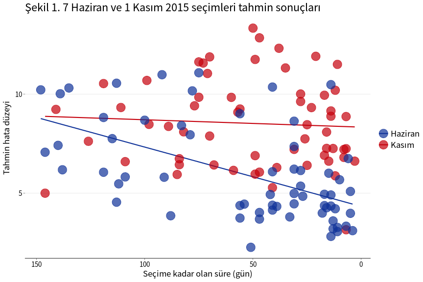
Şekil 1’de 7 Haziran ve 1 Kasım seçimlerine ilişkin anketlerin hata düzeyleri (düşey eksen), anketin tamamlandığı günden seçime kadar olan süreye göre (yatay eksen) sunulmuştur. Şekildeki düz çizgiler anket sonuçlarının ortalamasını göstermektedir. Bu şekilde de açıkça görüldüğü gibi her iki seçime yönelik anketlerin hata düzeyleri oldukça yüksektir (anketlerin hemen hepsinin hata düzeyi 3-12 arasındadır). 7 Haziran seçim anketlerinin hata düzeyi, seçime yaklaşıldıkça ciddi oranda azalırken, 1 Kasım seçim anketlerinin hata düzeyi, seçimden önceki 5 ay boyunca hemen hemen aynı kalmıştır. 7 Haziran seçimleri tahminindeki hata payının seçim gününe yaklaşıldıkça azalmasının nedeni, seçmen tercihlerinin zaman içerisinde değişmesi olabilir. Fakat 1 Kasım seçimlerine yönelik olarak hata düzeyinin değişmemesi ve çok yüksek düzeyde sabit kalmasını (ortalama 8.5 düzeyinde) açıklamak zordur.
Araştırma şirketleri farklı yöntemler kullanabileceği için, anketlerin hata düzeyindeki değişimi araştırma şirketleri için ayrı ayrı değerlendirmek uygun olacaktır. Şekil 2a’da 7 Haziran seçim anketlerinin hata düzeyi, araştırma şirketi bazında gösterilmiştir. 2 ve daha az anket yapan şirketlerin tamamı “Diğer” firma grubunda toplanmıştır.
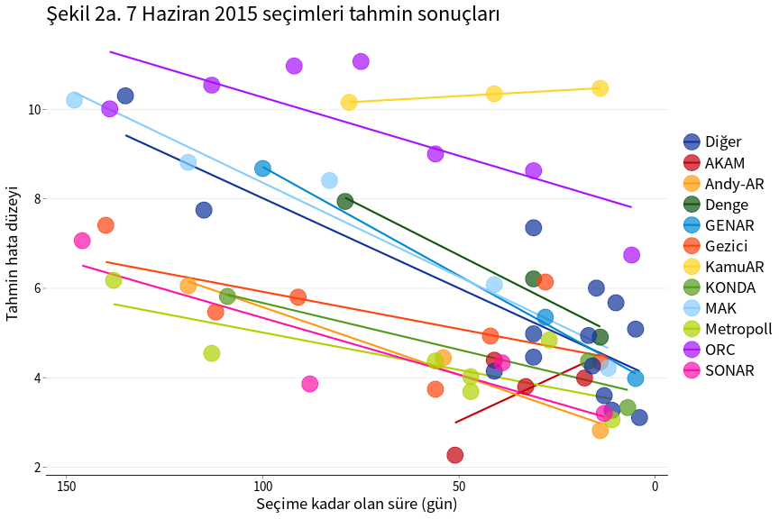
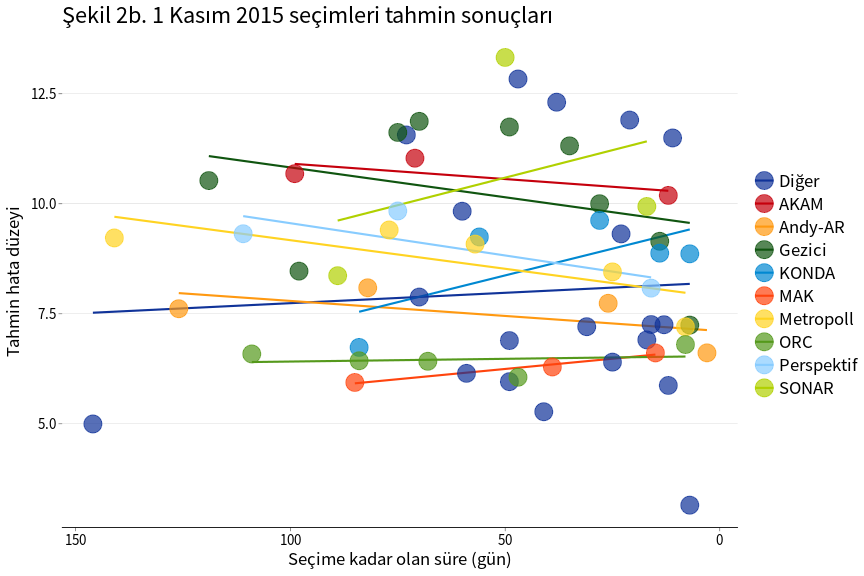
Şekil 2a’da görüleceği gibi, seçmen davranışının değişmesi varsayımı ile uygun olarak (AKAM ve KamuAR hariç) tüm araştırma şirketleri için, anketin uygulandığı tarih seçim tarihine yaklaştıkça hata düzeyi azalmaktadır. Araştırma şirketlerinin ortalamasını gösteren çizgiler arasındaki farklar, bu şirketlerin hata düzeyleri arasında sistemli farklar olduğunu göstermektedir.
1 Kasım seçimleri için aynı veriler Şekil 2b’de sunulmuştur. 5 şirketin hata düzeyleri seçime yaklaştıkça kısmen azalırken, beklenmedik bir şekilde 4 şirketin hata düzeylerinde artış gerçekleşmiştir. Tüm anketlere bakıldığında ise seçime yaklaşıldıkça hata düzeylerinde bir değişim yoktur. Bu durum, 7 Haziran seçimlerinden sonra, 1 Kasım seçimlerine kadar seçmenlerin tutumunda bir değişim olmadığı şeklinde yorumlanabilir. Fakat anketlerin hata düzeylerinin çok yüksek olması bu yorumun benimsenmesini zorlaştırmaktadır.
Yukarıda belirtildiği gibi anketlerin örneklem büyüklüğü artıkça örneklem hatası azalacağı için hata düzeyinin düşmesi beklenir. Ayrıca, seçim gününe yakın dönemde yapılan anketlerin, seçmen davranışlarının değişme olasılığı azaldığı için, daha doğru sonuç vermesi gerekir. Bu etkileri belirlemek amacıyla, her iki seçim anketleri için ayrı ayrı, hata düzeyini i) seçime kalan süre, ii) anketin uygulama süresi, iii) örneklem büyüklüğü (logaritmik) ve iv) araştırma şirketleri ile açıklayan regresyon modelleri tahmin edilmiştir.
Bu tahmin sonuçlarına göre, beklentilerimizin aksine, örneklem büyüklüğünün hata düzeyine istatistiksel olarak anlamlı bir etkisi bulunmamıştır: daha büyük örneklem ile yapılan anketlerin hata düzeyi daha düşük değildir. Bu beklenmeyen sonucun bir nedeni, yapılan anketlerin çoğunluğunun örneklem büyüklüğünün birbirine yakın olması olabilir.
Anketin uygulama süresinin de hata payına bir etkisi bulunmamıştır. Bir günde yapılan anket ile 10 günde yapılan anket benzer hata paylarına sahiptir.
Şekil 1’de de gözlemlendiği gibi, 7 Haziran seçim anketlerinde, anket seçim tarihine kadar yakın bir günde yapılmış ise hata düzeyi o oranda düşük olmaktadır ve bu etki istatistiksel (%1 düzeyinde) olarak anlamlıdır. 1 Kasım seçim anketlerinde ise, seçime kalan sürenin hata düzeyinde herhangi bir etkisi yoktur.
Araştırma şirketleri arasında da anlamlı farklılıklar bulunmuştur. 7 Haziran seçimlerinde (seçime kadar olan süre kontrol edildiğinde) hata düzeyi en düşük anketler AKAM, SONAR, Metropoll ve Andy-AR tarafından yapılmıştır. Bu şirketlerin hata düzeyleri istatistiksel olarak 2’den farklı değildir. Bu şirketleri 3-3.5 puan düzeyinde hata düzeyi ile KONDA ve Gezici izlemiştir. 1 Kasım seçimlerinde ise tüm şirketlerin hata düzeyleri 6 puanın üzerinde olmuştur ve bu hata düzeyleri istatistiksel olarak anlamlıdır.
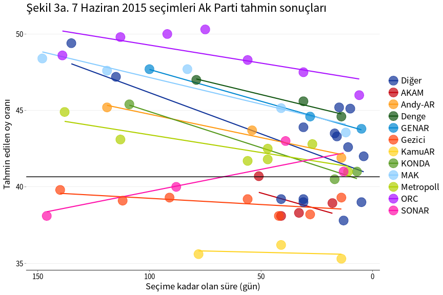
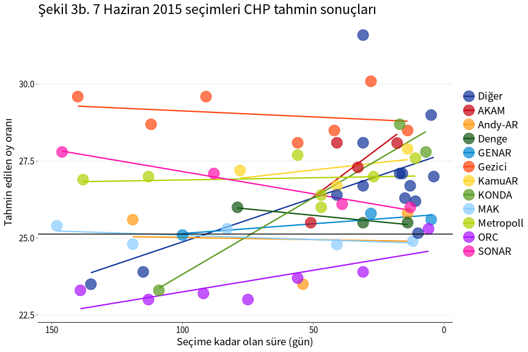
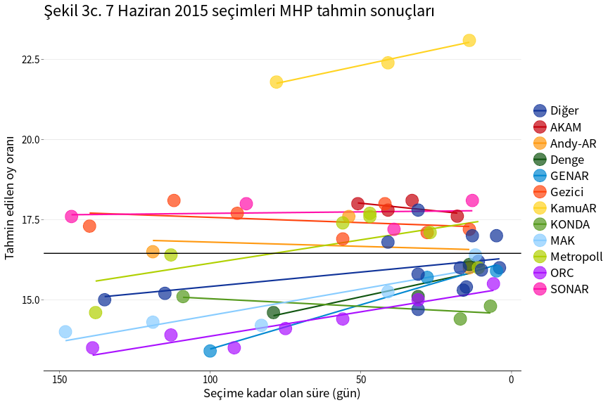
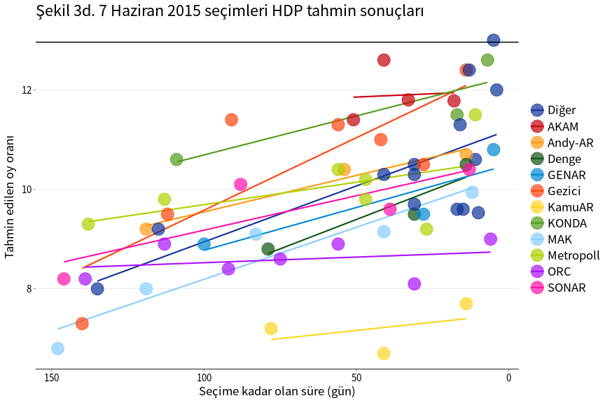
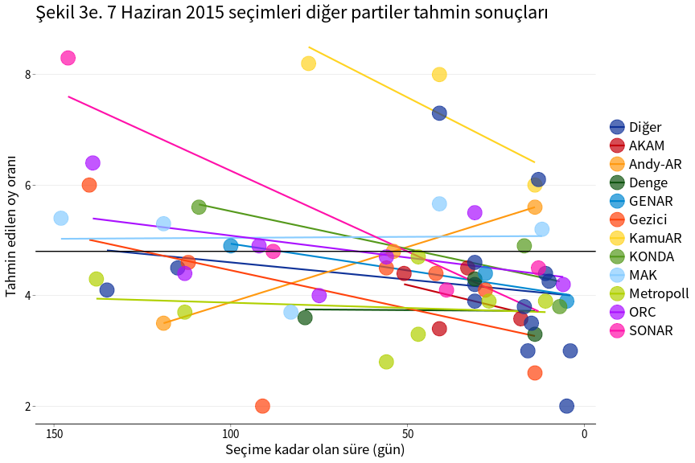
Partilerin oy oranı tahminlerine bakıldığında, seçime kadar olan süre kontrol edildiğinde anket sonuçlarının yansız sonuç verdiği görülmektedir. (Şekil 3a-3d’de bu durum görülmektedir.) Araştırma şirketlerinin tahminlerinin ortalaması Ak Parti, CHP ve MHP’nin aldığı oy oranlarına yakındır. 7 Haziran seçim tahminlerinde en büyük sapma HDP’nin oy oranında gözlenmiştir. Araştırma şirketlerinin 10’u HDP’nin aldığı oy oranının gerçekleşenin altında olacağını tahmin etmiş, sadece 2 şirketin tahmini (AKAM ve KONDA) gerçekleşen değerden (istatistiksel olarak %1 düzeyinde) farksız olmuştur.
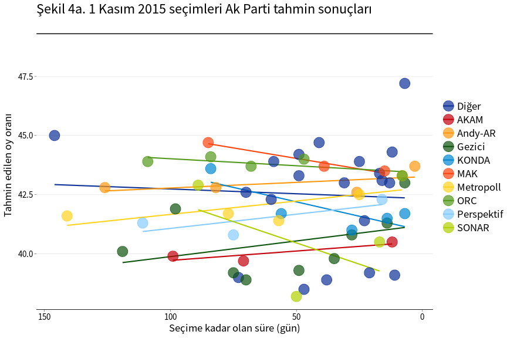
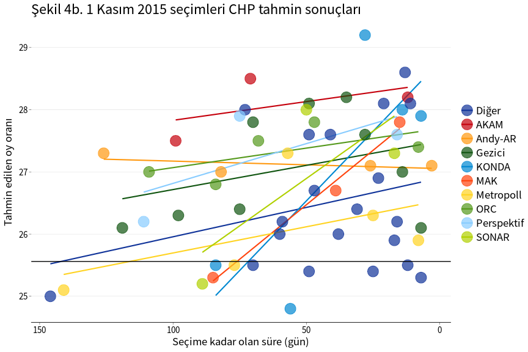
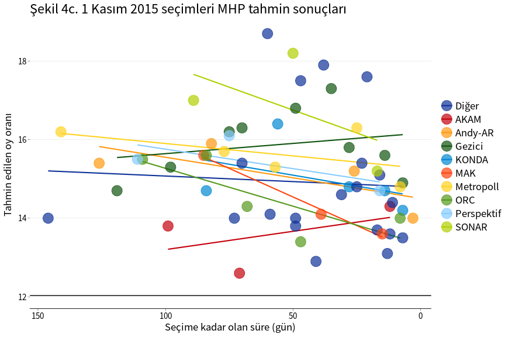
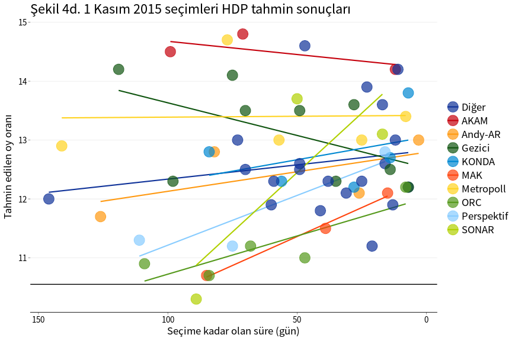
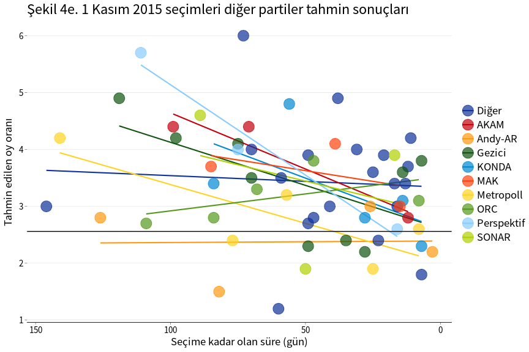
Tablo 2a. 7 Haziran 2015 seçim anketleri, parti düzeyinde hata oranları
| Bağımlı değişken: Hata düzeyi | |||||
|
Ak Parti |
CHP |
MHP |
HDP |
Diğer |
|
| Seçime kalan süre | 0.027*** | -0.009** | -0.009*** | -0.017*** | 0.008** |
| (0.006) | (0.004) | (0.002) | (0.003) | (0.003) | |
| Diğer | 1.042* | 1.947*** | -0.143 | -1.964*** | -0.882*** |
| (0.536) | (0.367) | (0.209) | (0.232) | (0.301) | |
| AKAM | -2.598*** | 2.443*** | 1.741*** | -0.470 | -1.116** |
| (0.956) | (0.654) | (0.372) | (0.414) | (0.538) | |
| Andy-AR | 1.287 | 0.404 | 0.797* | -1.822*** | -0.666 |
| (1.137) | (0.778) | (0.442) | (0.493) | (0.639) | |
| Denge | 3.977*** | 0.913 | -0.821* | -2.672*** | -1.398** |
| (1.104) | (0.756) | (0.430) | (0.479) | (0.621) | |
| GENAR | 3.531*** | 0.773 | -1.061** | -2.488*** | -0.755 |
| (1.108) | (0.758) | (0.431) | (0.480) | (0.623) | |
| Gezici | -3.490*** | 4.512*** | 1.627*** | -1.325*** | -1.324*** |
| (0.811) | (0.555) | (0.316) | (0.351) | (0.456) | |
| KamuAR | -6.136*** | 2.540*** | 6.372*** | -5.022*** | 2.245*** |
| (1.108) | (0.758) | (0.431) | (0.480) | (0.623) | |
| KONDA | 0.464 | 1.873** | -1.294*** | -0.655 | -0.388 |
| (1.108) | (0.758) | (0.431) | (0.480) | (0.623) | |
| MAK | 3.685*** | 0.641 | -0.912** | -3.020*** | -0.393 |
| (0.956) | (0.655) | (0.372) | (0.415) | (0.538) | |
| Metropoll | 0.220 | 2.383*** | 0.786** | -1.887*** | -1.502*** |
| (0.794) | (0.543) | (0.309) | (0.344) | (0.446) | |
| ORC | 6.043*** | -0.836 | -1.537*** | -3.156*** | -0.514 |
| (0.823) | (0.563) | (0.320) | (0.357) | (0.463) | |
| SONAR | -2.031* | 2.270*** | 1.903*** | -2.194*** | 0.053 |
| (1.021) | (0.699) | (0.397) | (0.443) | (0.574) | |
| Gözlem sayısı | 63 | 63 | 63 | 63 | 63 |
| R2 | 0.857 | 0.747 | 0.886 | 0.955 | 0.486 |
| Adjusted R2 | 0.820 | 0.681 | 0.857 | 0.943 | 0.352 |
| Not: | p<0.1; p<0.05; p<0.01 | ||||
Tablo 2b. 1 Kasım 2015 seçim anketleri, parti düzeyinde hata oranları
| Bağımlı değişken: Hata düzeyi | |||||
|
Ak Parti |
CHP |
MHP |
HDP |
Diğer |
|
| Seçime kalan süre | -0.001 | -0.011*** | 0.006 | -0.005 | 0.009** |
| (0.006) | (0.004) | (0.005) | (0.003) | (0.003) | |
| Diğer | -6.770*** | 1.405*** | 2.627*** | 2.265*** | 0.498** |
| (0.463) | (0.263) | (0.337) | (0.221) | (0.247) | |
| AKAM | -9.222*** | 3.175*** | 1.164 | 4.235*** | 0.764 |
| (1.070) | (0.608) | (0.777) | (0.511) | (0.571) | |
| Andy-AR | -6.281*** | 2.218*** | 2.731*** | 2.128*** | -0.715 |
| (0.942) | (0.535) | (0.684) | (0.450) | (0.503) | |
| Gezici | -8.782*** | 2.112*** | 3.510*** | 2.842*** | 0.392 |
| (0.673) | (0.382) | (0.489) | (0.322) | (0.359) | |
| KONDA | -7.372*** | 1.936*** | 2.698*** | 2.388*** | 0.382 |
| (0.810) | (0.460) | (0.588) | (0.387) | (0.432) | |
| MAK | -5.299*** | 1.550** | 2.119*** | 1.101** | 0.625 |
| (1.041) | (0.591) | (0.756) | (0.497) | (0.556) | |
| Metropoll | -7.155*** | 1.138** | 3.252*** | 3.139*** | -0.251 |
| (0.866) | (0.492) | (0.629) | (0.414) | (0.462) | |
| ORC | -5.453*** | 2.436*** | 2.142*** | 0.947** | 0.014 |
| (0.871) | (0.495) | (0.632) | (0.416) | (0.465) | |
| Perspektif | -7.784*** | 2.415*** | 2.990*** | 1.533*** | 0.937 |
| (1.086) | (0.617) | (0.788) | (0.519) | (0.580) | |
| SONAR | -8.728*** | 1.846*** | 4.451*** | 2.061*** | 0.441 |
| (1.051) | (0.597) | (0.764) | (0.502) | (0.561) | |
| Gözlem sayısı | 60 | 60 | 60 | 60 | 60 |
| R2 | 0.957 | 0.719 | 0.887 | 0.897 | 0.548 |
| Adjusted R2 | 0.947 | 0.655 | 0.862 | 0.874 | 0.446 |
| Not: | p<0.1; p<0.05; p<0.01 | ||||
1 Kasım seçimlerinde ise tüm şirketlerin tahminleri yanlı
olmuştur (tahminler için bkz. Şekil 4a-4d). Hemen hemen tüm anketlerde
Ak Parti’nin oy oranı gerçekleşenin altında, CHP, MHP ve HDP’nin oy
oranları da gerçekleşenin üstünde tahmin edilmiştir. (“Diğer” partilerin
toplam oy oranı genelde anketlerin hata payı içerisinde tahmin
edilmiştir.) 1 Kasım seçimlerinde en az hatalı tahminler MAK, ORC ve
Andy-AR anketlerinde gerçekleşmiştir fakat bu şirketlerin anketlerindeki
hata düzeyi 6-7 puan düzeyinde olup örneklem hatası düzeyinin çok
üstündedir. Tablo 2b’de görüldüğü gibi, partiler ayrımında bakıldığında
tüm şirketlerin yaptığı anketlerin ortalamaları Ak Parti’nin alacağı oy
oranını gerçekleşenin çok altında tahmin etmiş (en az fark 5 puandan
fazla), aynı şekilde hepsi CHP ve HDP’nin oy oranını gerçekleşenden
fazla tahmin etmiştir. Bir şirket dışında MHP’nin oy oranı da
gerçekleşenden yüksek tahmin edilmiştir ve bu farkların hepsi
istatistiksel olarak (%1 düzeyinde) anlamlıdır.
Özetlemek gerekirse:
7 Haziran seçimlerinde araştırma şirketlerinin önemli bir kısmının tahminleri doğru çıkmıştır.
Tüm anketlerin sonuçlarına göre Ocak 2015’den Haziran 2015’e kadar olan dönemde Ak Parti’nin oy oranı azalmış (yaklaşık 4 puan), CHP ve MHP’nin oy oranı kısmen (yaklaşık 1.4 puan) ve HDP’nin oy oranı ciddi bir şekilde (2.6 puan) artmıştır.
7 Haziran seçimlerinde bazı araştırma şirketlerinin tahminleri “örneklem hatası”nın çok üzerinde hatalı çıkmıştır. Bu durum araştırma şirketlerinin örneklem hatası dışında sistemli hata yapmış olabileceğini göstermektedir.
1 Kasım seçimlerinde tüm araştırma şirketlerinin tahminleri ciddi derecede hatalı olmuştur.
Hem 7 Haziran, hem de 1 Kasım anketlerinde, örneklem büyüklüğü ile hata düzeyi arasında bir ilişki tespit edilememiştir. Bu durum araştırma şirketlerinin önemli bir kısmında yöntemsel sorunlar olabileceğini düşündürmektedir.
7 Haziran-1 Kasım arasında Türkiye’de yaşanan olağanüstü gelişmeler sonucu 1 Kasım seçimleri öncesi “normal” bir seçim ortamının olmadığı açıktır. Fakat bu olağanüstü koşullara rağmen anket tahminlerinin bu kadar hatalı olması açıklamak zordur. Araştırma şirketleri 7 Haziran ve 1 Kasım seçimlerinde benzer anket yöntemleri kullanmışsa, bu yöntemlerin 1 Kasım seçimleri gibi seçmen davranışını kısa sürede etkileyebilecek olağanüstü koşullarda geçerli olmadığı da düşünülebilir. Bu çalışmada, seçim anketlerine ilişkin çok kısıtlı bilgi (anketin uygulama tarihi, uygulama süresi ve örneklem büyüklüğü) kullanılmıştır. Araştırma şirketlerinin anket yöntemine ilişkin (örneklem seçimi, ağırlıklandırma, cevapsız ve kararsız seçmenlerin değerlendirilmesi, vb) bilgileri kullanıcılara belirli bir standart formatta sunması anket sonuçlarının güvenilirliğinin test edilmesi açısından yararlı olacaktır.
Bu notta kısaca özetlenen, bir kısmı araştırma şirketlerinin kontrolünde olan, bir kısmı da bu şirketlerin dışındaki nedenlerle anket sonuçları gerçekleşen sonuçlardan farklı çıkabilir, bu doğaldır. Fakat bu farklılığın normal “örneklem hatası”ndan daha fazla olması durumunda, araştırma şirketleri farklılığın nedenlerini açıklayabilmelidir. Ancak bu açıklamalar inandırıcı bir şekilde yapıldığı taktirde anketler tekrar güvenilir olabilecektir.4
Veri kaynakları: 7 Haziran anketleri, 1 Kasım anketleri.↩︎
7 Haziran seçimlerine yönelik olarak hata düzeyi çok yüksek olan (aykırı değer) bir anket analize dahil edilmemiştir.↩︎
Bazı anketlerin yapıldığı tarih yerine sonuçlarının açıklandığı tarih bilinmektedir. Bu anketlerin yapıldığı tarih olarak sonuçlarının açıklandığı gün alınmıştır.↩︎
Türkiye Araştırmacılar Derneği (TÜAD) araştırma
şirketlerinin yaptığı çalışmaların belirli standartlarda olması için
çalışmalar yapmaktadır. 1 Kasım seçimlerinden sonra TÜAD, araştırma
şirketlerinin “araştırma sonuçları ile gerçekleşen seçim sonucundaki
oranlar arasında açıklanabilir sapma sınırının üzerinde bir fark olması
nedeniyle” bir inceleme yapma kararı aldı. Araştırma şirketlerinin
önemli bir kısmının TÜAD üyesi olmaması nedeniyle bu inceleme
“gönüllülük” esasına göre yapılacak (bilgi için bkz. http://tuad.org.tr).
Seçim anketlerinin bir bütün olarak yanılması Türkiye’ye özgü bir sorun
değil. Örneğin İngiltere’de 7 Mayıs 2015’de yapılan seçimlerde araştırma
şirketleri İşçi Partisi ve Muhafazakar Parti’nin % 33-34 oy alacağını
tahmin etmiş fakat seçimlerdeki oy oranları, sırasıyla, %30.4 ve %36.9
olmuştu. Anket sonuçlarındaki “örneklem hatası”nı aşan bu yanılma
üzerine British Polling Council (BPC) hatanın nedenlerinin belirlenmesi
amacıyla kapsamlı bir araştırma başlattı. Araştırmanın ilk sonuçlarının
19 Ocak 2016 günü açıklanması bekleniyor.↩︎